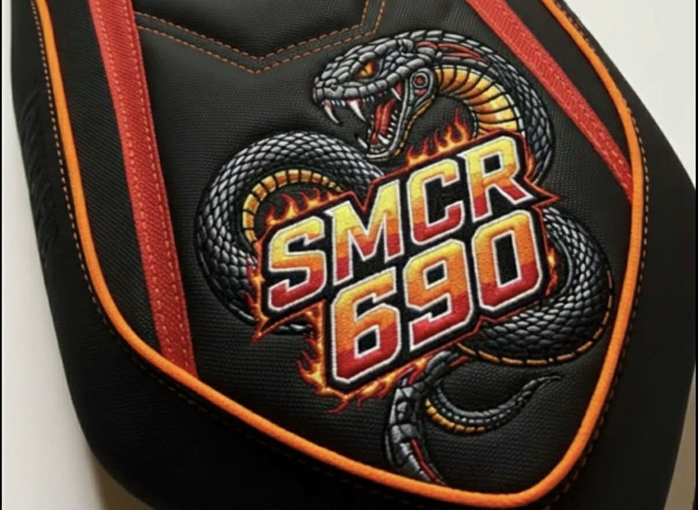
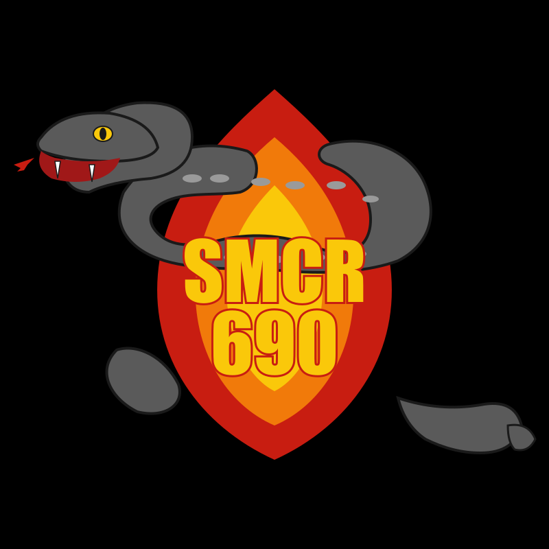

Pokrowiec: logo SMCR 690 przerobione pod hafciarkę
Uproszczenie graficzne bogatego haftu motocyklowego do postaci czytelnej maszynowo — mniej kolorów, zwarte kształty, brak cieni i gradientów.
Co Ci to załatwia. Dla pracowni hafciarskiej — gotowy SVG do importu w Wilcom / Embrilliance / Hatch / PE-Design z paletą 5 kolorów nici. Dla właściciela motoru SMCR 690 — wersja loga czytelna z daleka, bez szczegółów, które maszyna wycina źle. Porównanie oryginał vs wersja pod maszynę poniżej.

Oryginał — bogaty haft z cieniowaniem, gradientami i dziesiątkami odcieni. Długi czas pracy maszyny.

Wersja pod hafciarkę — 5 kolorów nici, płaskie pola, grube kontury, bez szczegółów poniżej ~1 mm.
Tekst SMCR 690 pogrubiony, żółty z czerwonym konturem — czytelny z daleka, prosty w wyszyciu.
Brak detali cieńszych niż ok. 1 mm w skali finalnej — żeby maszyna nie robiła dziur ani nie zrywała nici.
Plik SVG
Wektor — można przeskalować do dowolnego rozmiaru bez utraty jakości. Większość softu hafciarskiego (Wilcom, Embrilliance, Hatch, PE-Design) importuje SVG bezpośrednio lub przez konwersję do DST/PES.
Uwaga praktyczna: przed wpuszczeniem na maszynę warto w softem hafciarskim dopasować gęstość ściegu (zwłaszcza dla drobnych łusek) i typy ściegu (satin dla liter, fill dla dużych pól płomienia).